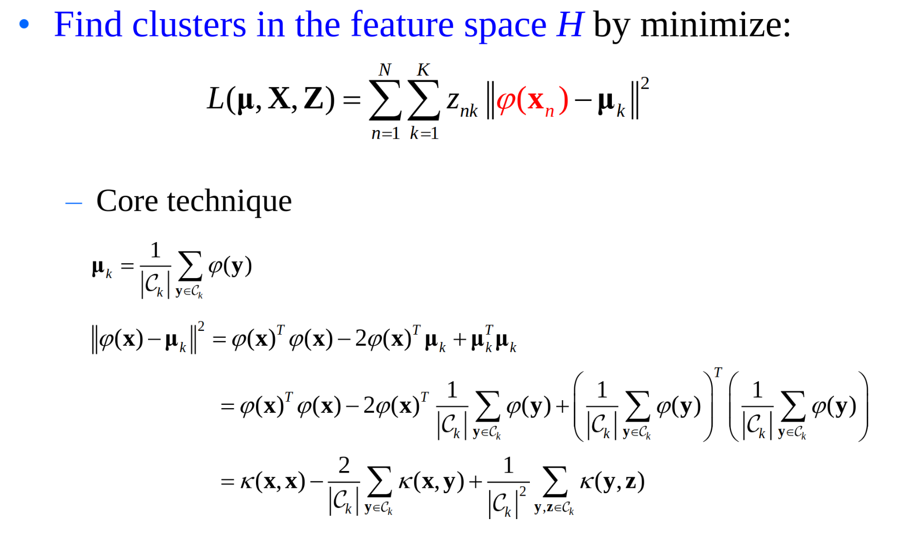

数据聚类
聚类：物以类聚，人以群分。
对一批没有类别标签的样本集，按照样本之间的相似程度分类，相似的归为一类，不相似的归为其它类。称为聚类分析，也称为无监督分类。
聚类任务：样本集的一个划分。每个划分中一部分叫做类或者簇。可以通过类中心或者类的边界点表示。
距离与相似度度量
集合相似性，先计算如下几个值
- \(f_{00}\)：样本x和y中满足 \(x_i=y_i=0\) 的属性个数。
- \(f_{10}\)：样本x和y中满足 \(x_i= 1 ,y_i=0\) 的属性个数。
- \(f_{01}\)：样本x和y中满足 \(x_i= 0 ,y_i=1\) 的属性个数。
- \(f_{11}\)：样本x和y中满足 \(x_i= 1 ,y_i=1\) 的属性个数。
简单匹配系数SMC：\(S(x,y) = \frac{f_{00} + f_{11}}{f_{00} + f_{10} + f_{01} + f_{11}}\)
Jaccard 相似系数：\(S_J(x,y) = \frac{f_{11}}{f_{10} + f_{01} + f_{11}}\)
Tanimoto 系数： \(S_T(x,y) = \frac{x^Ty}{x^Tx + y^Ty - x^T y} = \frac{f_{11}}{x^Tx + y^Ty - f_{11}}\)
类之间的距离可以是最短距离法、最长距离法。
k-means clustering
初始化需要给出聚类的个数k，然后随机k个初始中心点。
对于每个样本点，将他聚类到距离最近的中心。
然后更新每一个聚类的中心点 \(\mu_k = mean(C_k) = \frac{1}{|C_k|} \sum x_n\)
损失函数为 \(L(\mu,x_n,z_n) = \sum z_{nk} ||x_n - \mu_k||^2\) ，其中 \(z_{nk}\) 是将这个样本分为这个类的onehot编码。
k-means 算法更新分为两步：1.固定 \(\mu\) ，改变z(one hot 编码，就是分成那个类)。2. 固定z，修改中心 \(\mu\)
如何避免局部最小化，只能仔细地选择初始的值。
mean-shift clustering
是一个基于滑动窗口的算法，找到一个数据点最密集的区域。
每次从mean周围的窗口中，更新候选点。
开始有一个radius r，mean shift 是一个爬山算法，每次从kernel 改进到一个更加高密度的，直到结束。
需要设计window的窗口大小r。
DBSCAN 算法，开始的随意开始一个没有用过的点，所有距离小于 \(\varepsilon\) 的都是邻居。需要有足够数量的邻居，会被标记成一个新的聚类，否则被标签为噪音。对于有聚类的点，这个点和 \(\varepsilon\) 距离内的邻居是相同的聚类。重复这个过程直到所有点都被使用过。
Gaussian Distribution
\(N(x|\mu, \sum) = \frac{1}{(2 \pi |\sum |)^{\frac{1}{2}}} exp \{ - \frac{1}{2} (x - \mu) ^T \sum^{-1} (x- \mu)\}\)
使用em算法。
Hierarchical Clustering
分级聚类。这种思想可以自然地应用到聚类分析中，称为分级聚类，层级聚类或者系统聚类。
可以自底向上凝聚的层次聚类：将每个样本作为一个簇，然后根据给定的规则逐渐合并一些样本，形成更大的簇，知道所有的样本都被分到一个合适的簇中。
自顶向下的分裂的层次聚类：将所有的样本置于一个簇中，然后根据给定的规则逐渐细分样本，得到越来越小的簇，直到某个终止条件得到满足。
自底向上凝聚的层次聚类
合并：计算任意两个类之间的距离（相似性），将距离最小的两个类合并为一个类，其余类不变。（类似于哈夫曼编码）
系统树可以来描述这种聚类结果。
分级聚类两个核心问题：如何度量两个样本之间的聚类，如何度量两个簇之间的聚类。
实践：根据数据特性、聚类目标的不同，通常需要采用不同的簇间距离。对同一数据集，采用不同的簇间距离通常会得到不同的聚类结果。
总结：
不需要特殊指定聚类的数量。
分级树对于人类阅读很有友好。
时间复杂度为 \(O(n^2)\)
Spectral Clustering
谱学习方法：广义上讲，任何在学习过程中应用到矩阵特征值分解的方法均叫做谱学习方法，比如主成分分析（PCA）、线性判别分析（LDA）、流形学习中的谱嵌入方法、谱聚类等等。
谱聚类：建立在图论的谱图理论基础之上，其本质是将聚类问题转化为一个图上的关于顶点划分的最优问题。建立在点对相似性基础之上。
Laplacian matrix 拉普拉斯矩阵： \(L = D - W\)
基于数据集图构建：每个样本点构造一个顶点。构造边集：全连接；局部连接：k-邻近， \(\varepsilon\) 邻近。
子图的势 \(|A|\)：等于A所包含的顶点个数。
字符的体积 \(val(A)\)：等于A中所有顶点的度之和。
子图相似度：子图A与子图B的相似度定义为连接两个子图所有边的权重之和。\(w(A,B) = sum_{i \in A,j \in B} w_{ij}\)，其实就是割。
最小二分割在实践中，目标函数通常将一个点从其余各点中分离出来，这个不是我们所期望的。
于是使用归一化的最小二分割：对子图的规模进行限制，希望两个子图的规模不要相差太大，于是使用目标函数 \(R(A,\overline{A}) = \frac{1}{2} (\frac{cut(A,\overline{A})}{|A|} + \frac{cut(A,\overline{A})}{|\overline{A}|})\)，或者 \(Ncut(A,\overline{A}) = \frac{1}{2} (\frac{cut(A,\overline{A})}{vol(A)} + \frac{cut(A,\overline{A})}{val{\overline{A}}})\)
图的k-切割。
谱分析在线性代数中：矩阵的基本特征，特征对。使用特征对去解决问题的方法。
谱聚类
构建一个相似图，计算出拉普拉斯矩阵L。
计算k个L的最小的特征向量 \(\mu_1,\mu_2,....,\mu_k\)。
记 \(U = [\mu_1,\mu_2, ...,\mu_k]\)。
令 \(y_i\) 为矩阵U 的第 \(i\) 行。
然后将 \(y_i\) 看作为一个点，使用 k-means 算法进行聚类。
K-means 致力于最小化类内的平均距离。谱聚类致力于最小化类间相似度。
k-means采用的全图，即任意两个样本之间的距离都没有被忽略。谱聚类采用的是近邻图，一般只计算每个样本与其近邻之间的相似度。
算法核心问题是图构造：局部连接k近邻取多大，点对权值如何计算。
Kernel Clustering
核聚类
\(\phi(x)\) 是一个映射函数，将x映射到一个新的空间，不过这里使用核函数，就是代替了这种映射。使得不需要知道映射即可得到点积。因为最终只需要得到点积。
定义核函数 \(k(x,y) = \phi(x)^T \phi(y)\)
